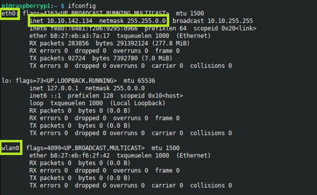

Access Point Fai da te
Argomenti teorici e requisiti tecnici
Prerequisti: Raspberry, terminale linux
Argomenti trattati: DHCP, DNS, Indirizzamento IP
L'idea è quella di implementare un Access Point WIFI analogo a quelli che si hanno a casa per la connessione, con server DHCP e server DNS configurati manualmente.
Prima di andare avanti, ricordiamoci di aggiornare il sistema, ripulire e riavviare.
Scegliere un piano di indirizzamento
Da quello che abbiamo studiato sappiamo che ogni scheda di rete ha il suo indirizzo IP. Nel nostro Raspberry ci sono 2 schede di rete:
- la schede di rete cablata, che si chiama
eth0 - la scheda di rete wifi, che si chiama
wlan0
La scheda di rete cablata dovrebbe essere collegata alla rete della scuola, quindi ha già un indirizzo IP fornito dai server DHCP della scuola. La scheda di rete wifi non dovrebbe essere collegata a nulla e quindi non avere alcun indirizzo.
Per verificare i nomi delle schede di rete e l'indirizzamento attuale
del nostro Raspberry procediamo da terminale con il comando ifconfig
(Valido anche da terminale Mac e analogo del comando ipconfig di Windows).
Si dovrebbe vedere qualcosa di simile a questo:

L'indirizzo IP della scheda WIFI dovrà essere statico e scelto da noi. Per il mio esempio e come riferimento in quello che scriverò dopo, io scelgo l'indirizzo 192.168.0.1/24.
A questo punto, immaginando che collegherò il server DHCP
all'interfaccia wlan0 dovrò scegliere uno scope e
identificare tutte le informazioni da passare ai client DHCP.
Io ho scelto le seguenti:
- scope: 192.168.0.11-30 con TTL di 1 ora
- gateway sarà ovviamente l'IP del Raspberry: 192.168.0.1
- DNS sarà ancora una volta il Raspberry.
Ultima cosa, poiché si va ad implementare una rete wifi con password,
bisogna scegliere il nome della rete Wifi (che si definisce SSID) e la
chiave di accesso (la password del wifi).
Tenendo bene a mente (no, meglio se segnate su un foglio) le precedenti informazioni, possiamo procedere nell'implementazione del router/AccessPoint con Raspberry.
Installare e configurare dnsmasq
L'installazione è facile:
Il file di configurare da modificare è il seguente
Va impostato in questo modo, trovando le sezioni opportune:
# to activate dhcp server on 1 interface
interface=wlan0
bind-interfaces
# scope
dhcp-range=192.168.0.11,192.168.0.30,255.255.255.0,1h
# options
dhcp-option=option:router,192.168.0.1
# dns configuration
listen-address=192.168.0.1
server=1.1.1.1
domain-needed
bogus-priv
Installare hostapd
Qui l'installazione è più complicata :)
Il file di configurazione va inserito nel percorso /etc/hostapd/hostapd.conf, quindi con il comando:
Va copiato dentro pari pari il seguente codice, modificando opportunamente l'SSID scelto e la chiave di accesso:
# set operation mode
interface=wlan0
driver=nl80211
hw_mode=g
country_code=IT
channel=6
## Key management algorithms ##
wpa_key_mgmt=WPA-PSK
wpa=2
## Set cipher suites (encryption algorithms) ##
## TKIP = Temporal Key Integrity Protocol
## CCMP = AES in Counter mode with CBC-MAC
wpa_pairwise=TKIP
rsn_pairwise=CCMP
## Shared Key Authentication ##
auth_algs=1
## Accept all MAC address ###
macaddr_acl=0
# SSID & passphrase
ssid=IL_NOME_DELLA_RETE_WIFI
wpa_passphrase=LA_PASSWORD_DEL_WIFI
Fai in modo che il file di configurazione venga caricato dal demone hostapd: apri /etc/default/hostapd e modificalo come
indicato
Va modificata un'unica riga, in corrispondenza della voce DAEMON_CONF che va decommentata e riempita come indicato.
Ok, siamo pronti!
Ultime impostazioni
Le ultime operazioni da fare servono per far funzionare il Raspberry come un router e permettergli dunque di condividere la sua connettività con tutti quelli connessi al suo Wifi tramite hostapd. Sono operazioni standard che vanno eseguite una ad una nella riga di comando.
Le divido blocco per blocco per evidenziare i vari passaggi.
Impostazione IP statico rete Wifi
Abilitazione traffico di rete attraverso il Raspberry
$ sudo sysctl -w net.ipv4.ip_forward=1
$ sudo iptables -t nat -A POSTROUTING -o eth0 -j MASQUERADE
$ sudo iptables -A FORWARD -i eth0 -o wlan0 -m state --state RELATED,ESTABLISHED -j ACCEPT
$ sudo iptables -A FORWARD -i wlan0 -o eth0 -j ACCEPT
Ultimo, se non ci sono messaggi di errori precedenti, avviare hostapd e dnsmasq.
Ecco fatto, dovrebbe funzionare tutto!
Prendete il vostro telefono e provate a connettervi alla rete Wifi del Raspberry e a navigare!